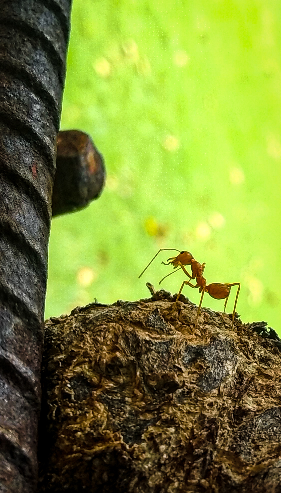
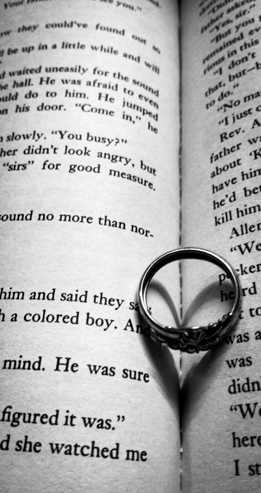

We are a Photography
Agency

Nature
Ants are eusocial insects of the family Formicidae and, along with the related wasps and bees, belong to the order Hymenoptera. Ants evolved from vespoid wasp ancestors in the Cretaceous period. More than 13,800 of an estimated total of 22,000 species have been classified.

Creative
Creative photography is a technique by which you combine different shapes, colors, and forms of ordinary moments and turn them into creative art using your photography skills. This type of photography demands a unique way of seeing things and projecting an innovative image, altered from reality.